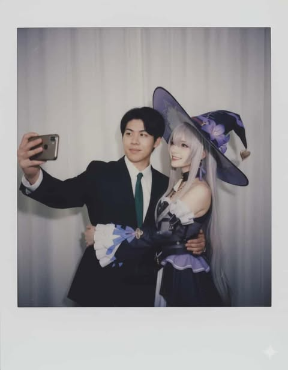

|  |
Naragorn Chotthanasakสาขาเทคโนโลยีและสารสนเทศคณะวิศวกรรมศาสตร์และเทคโนโลยี สถาบันการจัดการปัญญาภิวัฒน์ |
| ลำดับ | ของกินที่ชอบ |
|---|---|
| 1 | หม่าล่า |
| 2 | ราเมง |
| 3 | กระเพราหมากรอบ |
| 4 | แกงจืด |
สวัสดีครับ ผมชื่อ Naragorn ชื่อเล่น นุ สาขาDIT เซค G3
เป็นคนง่วงๆตลอดแต่ตื่นเฉพาะตอนกินชอบเล่นเกมมากๆเช่นวาโล วาโลแรนท์ แล้วก็ valorant
อยากเรียนfull stack เพราะ อยากนำความรู้ไปใช้หาเงินในอนาคต ผมชอบเงินครับ
คาดหวังว่าเรียนจบรายวิชานี้แล้วมีวิชาไปฝึกงานต่อในปีถัดๆไปได้
จุดอ่อนคือจดจออะไรได้ไม่ค่อยนาน ง่วงเป็นคนนอนน้อยค่อนข้างสมาธิสั้น